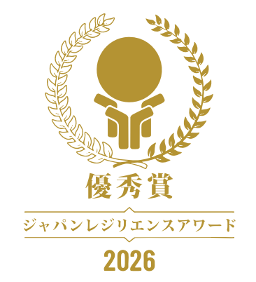
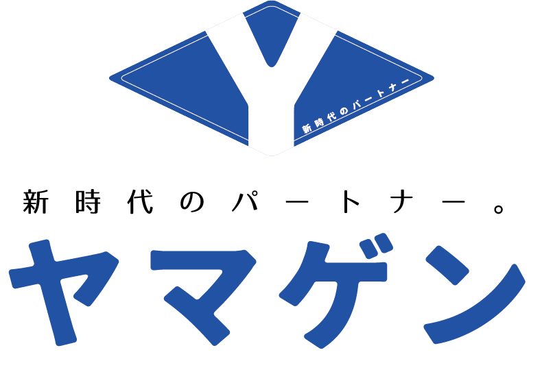

会社概要
受賞・掲載情報
アスティアの自己完結型 循環トイレシステムは、防災・レジリエンスおよび環境配慮の観点から高く評価されています。
ジャパン・レジリエンス・アワード2026 優秀賞受賞

[画像プレースホルダー：優秀賞の賞状]
（アワードで授与された賞状の写真を配置）
（アワードで授与された賞状の写真を配置）
販売総代理店

アスティアの販売および導入ご相談窓口は、山梨県甲府市に本社を構える「株式会社ヤマゲン」が販売総代理店として承っております。
自治体・公共施設、観光地、企業、現場など、さまざまな導入先に対して、実績とネットワークを活かした安心の体制でご提案いたします。
| 販売元 | 株式会社ヤマゲン |
|---|---|
| 所在地 | 〒400-0025 山梨県甲府市朝日1-7-14 |
| 電話番号 | 055-288-1341 |
| FAX | 055-288-1342 |
| 公式サイト | http://www.yamagen-co.jp/ |
提携先
開発元：アスティア屋号
開発に込めた想い
[開発者の手元写真]
（手元の様子）
（手元の様子）
[発案者の手書きの手紙]
（手書きの手紙）
（手書きの手紙）
SDGsへの取り組み
SDGs目標6の実現に向けて
私たちアスティアは、SDGs目標6「安全な水とトイレを世界中に」の実現に貢献することを目指しています。
アスティアは、使用した水を外部へ放流せず、システム内で処理・浄化して再利用する循環式のトイレシステムです。水資源を大切にしながら、上下水道が整っていない場所や、災害時・断水時にも衛生的なトイレ環境を提供できることが大きな特徴です。公園、公共施設、観光地、キャンプ場、工事現場、山岳地など、さまざまな場所に安心して使えるトイレを届けることで、持続可能な社会づくりに貢献していきます。